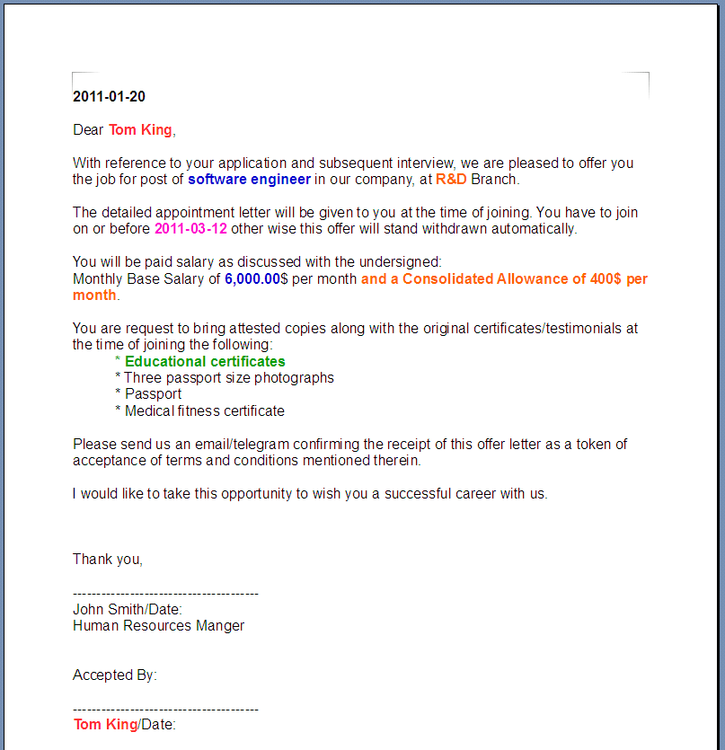
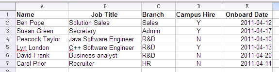

Demos > Offer Letter with Text Fields
Overview
We have introduced several samples about how to use Simple ODF API to generate document from the predefined templete, for example, Demo: Navigation API in Hotel Receipt. I believe you have known how easy it is. But sounds like, we never talk about how to create a template document using Simple ODF API.
Today, let's do it.
Simple API provides Fields API since version 0.5. OpenDocument text documents or OpenDocument text content embedded in other types of documents may contain variable text elements called fields. Fields are commonly used for, a page number field displays the number of the page on which it appears or a creation date field displays the date on which a document was created. Besides, there are several advance field, such as, variable field and condition field.
This demo provides a Java application which can create the offer letter template document from a sample and use it to generate new offer letters with the information from a spreadsheet. The template document contains some fields whose content is decided by the information from data file.
The following picture show a sample offer letter. I have labeled the variable content with blod and color style.

This offer was generated on "2011-01-20". It also can be in any other date, so this text content should be replaced by a date field. "Tom King" is the receiver, this name can be replaced with a variable field, then we can send it to any other perpson. Similarly, "software engineer" is the job title of "Tom King", "R&D" is the branch which he belongs to, and "2011-03-12" is his onboard date, all of them should be replaced by variable field in a template document.
Salary and allowance are more complex. Different job titles and branches have different rules. Simplicity, we assume that except "Secretary" is 5,500,00, all of the other job titles are 6,000.00. We also assume that employees from "Sales" don't have allowance. Condition field or Hidden Text field is needed to realize these rules. The same as certificates/testimonials, for campus hires, they need supply "Educational certificates", while for professinal hires, they need supply "Experience certificates from previous employers" and "Copy of resignation/acceptation letter and relieving letter". This is another use case of condition field.
After replaced all of these variable content with fields, the template document is ready. The process of generate new offer letter is very simple. Only need to load the following data, update the variable values with the data and save as a new document.

No need text content search, no need target replace. It's faster than the content replace way. Beside, the variable content is highlighted automatically by Symphony or Open Office when the document is opend. The following is a generated letter sample.

As using fields, the new offer letter is easily updated without inconsistent, even though after generated. You can do it in Symphony or Open Office.
Code Introduction
There are two methods in the class, createFieldTemplate() is used to create template document from sample, and generateOfferLetterDocument() is used to generated new document using template and data file.
public static void main(String[] args) {
try {
// create offer letter template with sample offer letter.
createFieldTemplate();
// generate offer letters for the candidates from spreadsheet document.
generateOfferLetterDocument();
} catch (Exception e) {
e.printStackTrace();
}
}
Below is the source code of method createFieldTemplate(). The basic process is find the variable content and replace it with a field. We use FixedDateField, UserVariableField, ConditionField and HiddenTextField in this method. Simple ODF API provides more types of fields. For more information, please reference the Javadoc or CookBook.
public static void createFieldTemplate() throws Exception {
TextDocument sampleDocument = TextDocument.loadDocument("Tom's Offer.odt");
// replace offer date with FixedDateField
TextNavigation search = new TextNavigation("2011-01-20", sampleDocument);
while (search.hasNext()) {
TextSelection item = (TextSelection) search.nextSelection();
FieldSelection fieldSelection = new FieldSelection(item);
fieldSelection.replaceWithSimpleField(Field.FieldType.FIXED_DATE_FIELD);
}
// replace candidate name with UserVariableField
VariableField candidateVar = Fields.createUserVariableField(sampleDocument, "candidateVar", "Tom King");
search = new TextNavigation("Tom King", sampleDocument);
while (search.hasNext()) {
TextSelection item = (TextSelection) search.nextSelection();
FieldSelection fieldSelection = new FieldSelection(item);
fieldSelection.replaceWithVariableField(candidateVar);
}
// replace job title with UserVariableField
VariableField jobTitleVar = Fields.createUserVariableField(sampleDocument, "jobTitleVar", "software engineer");
search = new TextNavigation("software engineer", sampleDocument);
while (search.hasNext()) {
TextSelection item = (TextSelection) search.nextSelection();
FieldSelection fieldSelection = new FieldSelection(item);
fieldSelection.replaceWithVariableField(jobTitleVar);
}
// replace branch with UserVariableField
VariableField branchVar = Fields.createUserVariableField(sampleDocument, "branchVar", "R&D");
search = new TextNavigation("R&D", sampleDocument);
while (search.hasNext()) {
TextSelection item = (TextSelection) search.nextSelection();
FieldSelection fieldSelection = new FieldSelection(item);
fieldSelection.replaceWithVariableField(branchVar);
}
// replace onboard date with UserVariableField
VariableField onBoardDateVar = Fields.createUserVariableField(sampleDocument, "onBoardDateVar", "2011-03-12");
search = new TextNavigation("2011-03-12", sampleDocument);
while (search.hasNext()) {
TextSelection item = (TextSelection) search.nextSelection();
FieldSelection fieldSelection = new FieldSelection(item);
fieldSelection.replaceWithVariableField(onBoardDateVar);
}
// replace salary with ConditionField
search = new TextNavigation("6,000.00", sampleDocument);
while (search.hasNext()) {
TextSelection item = (TextSelection) search.nextSelection();
FieldSelection fieldSelection = new FieldSelection(item);
fieldSelection.replaceWithConditionField("jobTitleVar != \"Secretary\"", "6,000.00", "5,500.00");
}
// replace consolidated allowance with HiddenTextField
search = new TextNavigation(" and a Consolidated Allowance of 400\\$ per month", sampleDocument);
while (search.hasNext()) {
TextSelection item = (TextSelection) search.nextSelection();
FieldSelection fieldSelection = new FieldSelection(item);
fieldSelection.replaceWithHiddenTextField("branchVar == \"Sales\"", " and a Consolidated Allowance of 400$ per month");
}
// replace certificates/testimonials with ConditionField
Fields.createUserVariableField(sampleDocument, "campusHireVar", "N");
search = new TextNavigation("\\* Educational certificates", sampleDocument);
while (search.hasNext()) {
TextSelection item = (TextSelection) search.nextSelection();
FieldSelection fieldSelection = new FieldSelection(item);
fieldSelection
.replaceWithConditionField(
"campusHireVar == \"Y\"",
"* Educational certificates",
"* Experience certificates from previous employers\n* Copy of resignation/acceptation letter and relieving letter");
}
sampleDocument.save("OfferTemplate.odt");
}
Method generateOfferLetterDocument() is easier. Just load the template document and data docuemnt and fill new value to all of the variables. getVariableFieldByName() is a method of VariableContainer used to iterate variable field by name.
public static void generateOfferLetterDocument() throws Exception {
TextDocument templateDocument = TextDocument.loadDocument("OfferTemplate.odt");
SpreadsheetDocument dataDocument = SpreadsheetDocument.loadDocument("Candidates.ods");
Table table = dataDocument.getTableByName("Sheet1");
int rowCount = table.getRowCount();
for(int i = 1; i < rowCount; i++)
{
Row row = table.getRowByIndex(i);
String name = row.getCellByIndex(0).getDisplayText();
VariableField candidateVar = templateDocument.getVariableFieldByName("candidateVar");
candidateVar.updateField(name, null);
String jobTitle = row.getCellByIndex(1).getDisplayText();
VariableField jobTitleVar = templateDocument.getVariableFieldByName("jobTitleVar");
jobTitleVar.updateField(jobTitle, null);
String branch = row.getCellByIndex(2).getDisplayText();
VariableField branchVar = templateDocument.getVariableFieldByName("branchVar");
branchVar.updateField(branch, null);
String isCampusHire = row.getCellByIndex(3).getDisplayText();
VariableField campusHireVar = templateDocument.getVariableFieldByName("campusHireVar");
campusHireVar.updateField(isCampusHire, null);
String onBoradDate = row.getCellByIndex(4).getDisplayText();
VariableField onBoardDateVar = templateDocument.getVariableFieldByName("onBoardDateVar");
onBoardDateVar.updateField(onBoradDate, null);
templateDocument.save(name+"'s offer letter.odt");
}
}
Download
Powered by the Simple Java API for ODF version 0.5.
You can download the code of this demo from here.